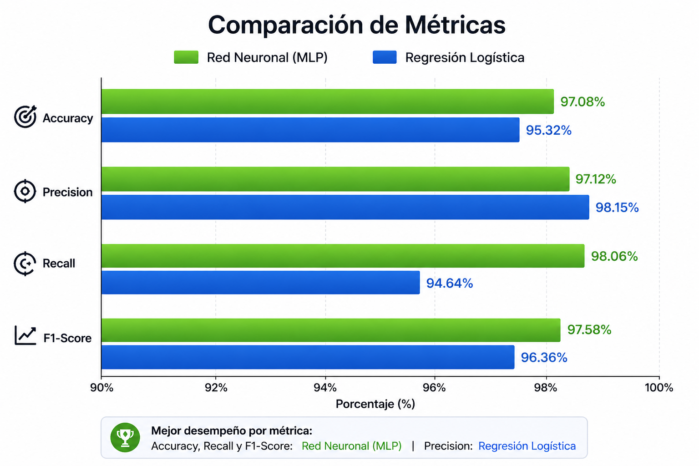
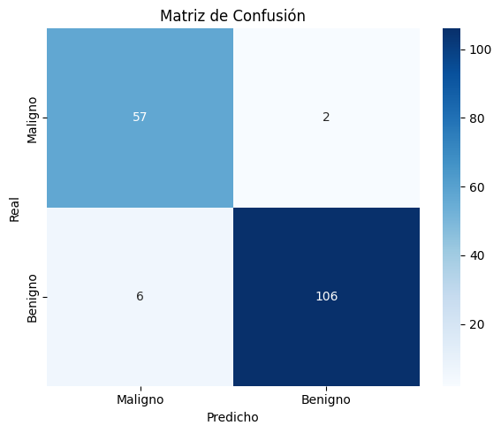
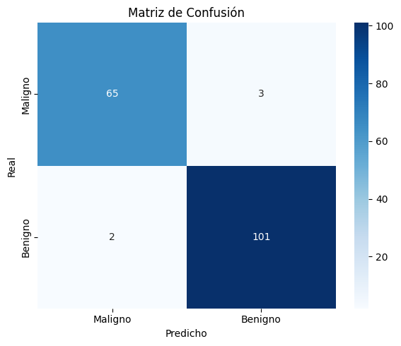

Diagnóstico predictivo de
cáncer de mama
Herramienta de apoyo basada en aprendizaje automático para clasificar tumores como malignos o benignos a partir de características clínicas.
Dataset
Breast Cancer Wisconsin — UCI Machine Learning Repository
- 569 muestras reales
- 30 características numéricas
- 2 clases: Maligno / Benigno
Modelos
Dos algoritmos de clasificación entrenados y listos para usar:
- Regresión Logística
- Red Neuronal (MLP)
¿Qué predice?
Con base en medidas del núcleo celular (radio, textura, perímetro…) el sistema determina si un tumor es:
- 🔴 Maligno — canceroso
- 🟢 Benigno — no canceroso
Rendimiento de los Modelos

Predicción Individual
Ingresa los valores clínicos para obtener una predicción inmediata.
Predicción por Lote
Sube un archivo CSV con múltiples muestras y obtén las predicciones de todas a la vez.
Arrastra tu archivo CSV aquí
o haz clic para seleccionar
El CSV debe tener las 30 columnas de features (ver dataset de ejemplo)
Resultados del Entrenamiento
Métricas y matrices de confusión obtenidas con el conjunto de prueba (20% del dataset).
Regresión Logística

Red Neuronal (MLP)

Comparación Global
Interpretación de Métricas
Porcentaje total de predicciones correctas.
De las muestras clasificadas como benignas, ¿cuántas realmente lo son?
De todas las muestras benignas reales, ¿cuántas detectamos?
Media armónica entre Precision y Recall. Ideal cuando las clases están desbalanceadas.